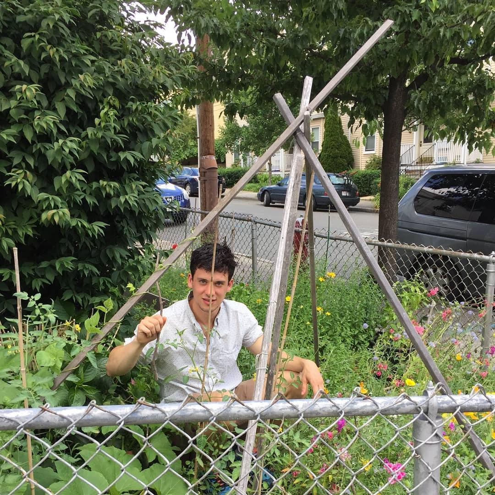
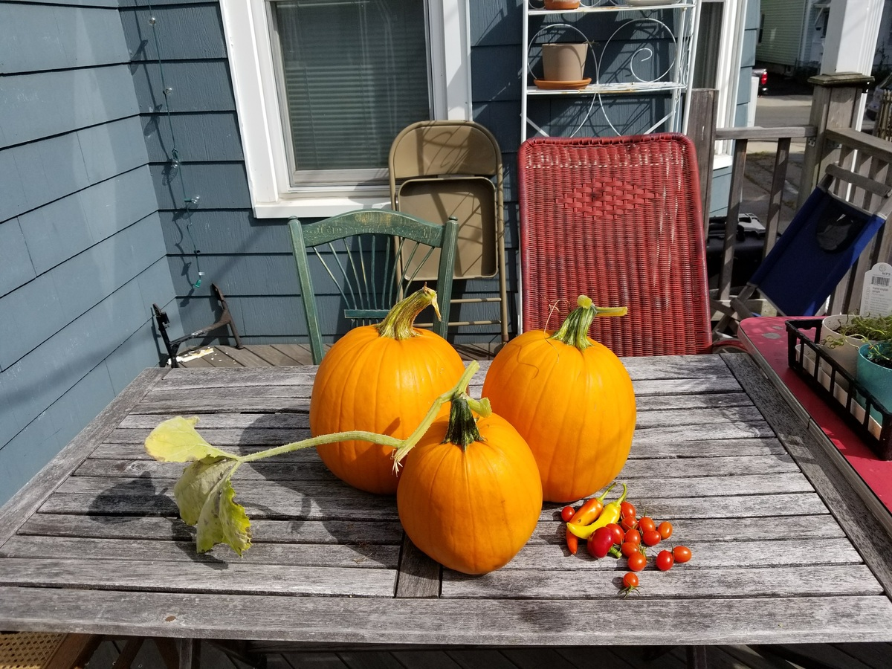
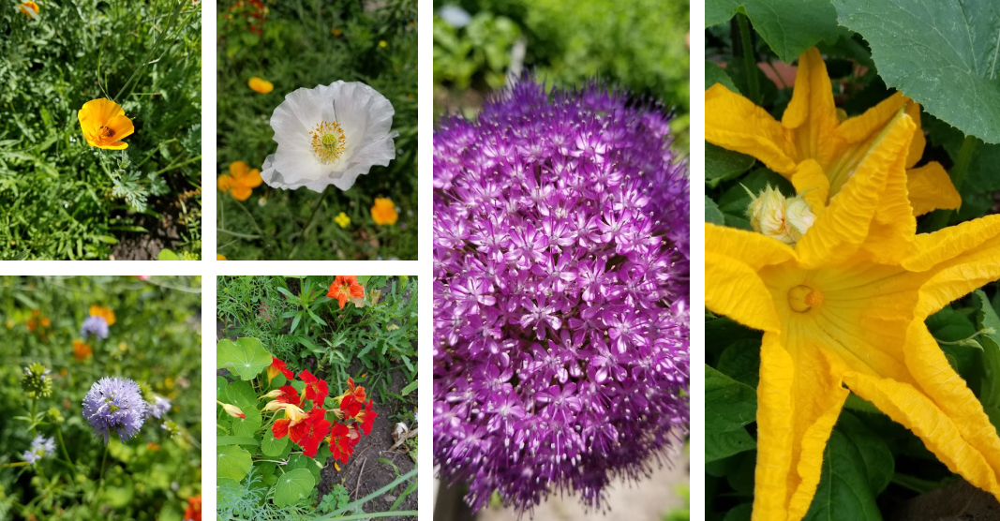
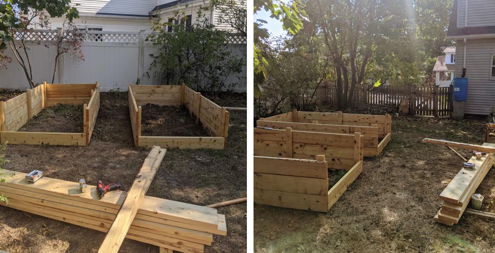
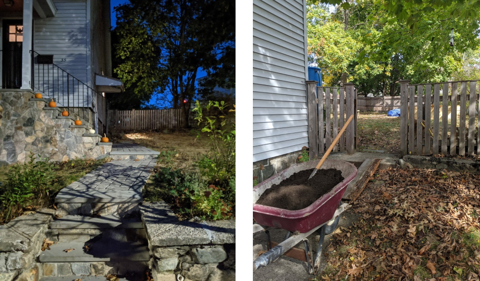
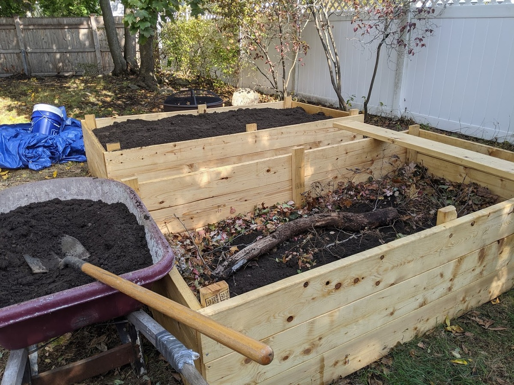
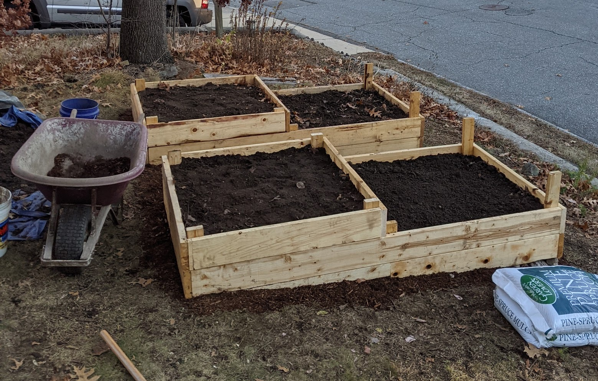

mrshll.com
Learning to grow (plants)
I inherited a garden. Actually, I took over a friend’s apartment lease and the garden happened to come it. Alden and Anna, the bequeathers, had to make a short-notice move because of family member’s failing health. Quinalt and I had been living in a large apartment building on the other side of Union Square - our last choice, and the result of the typical Boston everyone-moves-on-the-same-day scramble. We jumped at the chance to move into their lovely 2nd story apartment.
Alden and Anna had just built two modest plots, maybe 4x4 each. I remember Alden handing me sugar peas on a previous visit. Basil and tomatoes growing tall.
The downstairs neighbor, Ladawn, (it was a three-story, with one tenant on each floor) had two longer plots, maybe 3x12 in total. Brick stood at the perimeter to give it a few inches of rise. Every year, Ladawn’s plants grew thick as small trees. Her cherry tomato plants would hang heavy, and her pole beans up their trellis would block the sun. She was also the weekly DJ at River Gods, one of the best bars in Cambridge. Her plants probably considered her a river god as well. She told me her secret once: to absolutely douse the plants every other day. To flood irrigate them. One day, about a year after Alden and Anna moved, she packed up an antique VW camper van and drove to Portland. River Gods coincidentally closed doors around the same time. So I inherited her garden too.

I had two stellar seasons in these plots. In the first, I picked up where Ladawn left off, harvesting copious pole beans, tomatos, eggplants, herbs. The next, we planted a wider assortment, with the prized and celebrated crop being the Pumpkins.
 Looking back at these pictures, I am astounded we grew these
I think the success of our first dance with this garden was in part due to the haphazard scattering of wildflower seeds by Alejandra. That and a rash of wild mint that flowered early. We’d regularly have dozens of bees busily pollinating the garden. Difficulty I’ve had with pumpkins in the past is in the polination, the flowers being as fragile and ephemeral as they are. But with an army of bees and other garden pals, it worked out.

This garden is sadly no more. When we moved out, the landlord weedwacked the whole area down to the bare soil - a nuissance, things growing like that. But I’ve since moved to a house in Medford. And while the yards are partly shaded by a beautiful, big American Walnut in the back and a Black Oak in the front, there are two slices of the yards that get tons of sunlight.
I went “whole hog” in the most vegetarian sense of the word. In these slices of sunlight, I built 4 raised beds with a combined volume of 8 cubic yards, and about 128 square ft of area (double what I had at this apartment).
The process of building and planning them was a perfect quarantine activity. I did a wild amount of research on wood types, natural wood treatments, soil types, Hügelkultur, seed suppliers, etc. I made it more difficult than in needed to be, but the process was as rewarding as the eventual results.
I decided to go with spruce pine. It’s relatively “sustainable” - moreso because it’s a fast growing regional softwood than because it has that pervasive stamp that I’m expected to take at face value. Cedar, which is the gold standard of rot-resistant raised bed material is also over \(10/ft, which would have made this a very expensive endeavour indeed. Spruce pine, on the other limb, was \)10 an 8’x4’x2” board. I opted for 24” tall beds because we live on a rock. And because it seemed like a challenge to get that much dirt back there to fill them. As simple as the design is, it was fun to sketch out a few configurations and realize the subtle changes impact on volume and area.
I found that raw linseed oil was one of the best and most readily available non-toxic treatments for the wood. Every week, I’d trot down to the tiny hardware store and buy all of the raw linseed oil on their shelves. They now know me as the linseed oil guy. Linseed oil also comes in a boiled version, which causes it to dry much faster, but these days has a number of chemical additives. So stick to raw, even if it takes many days or weeks to dry (depending on temp). I meticulously painted each board a few times before construction. The smell is fantastic - a woody, toasted sweetness. The closest thing I can think of is toasted seasame oil. I got it all over my clothes as I worked (and didn’t care). The construction was simple, held together by 3” galvanized screws.
 I also raised the rain barrel so that it’s just high enough to feed the beds
We use a compost company for weekly pickup - and they do bulk 50-50 compost/soil deliveries. So I did some math and ordered 7 cubic feet, knowing I’d do my best to fill the very bottom with fallen limbs, leaves and other woody debris. I laid down a tarp and the next day I stepped outside and the dirt was already there. I never saw the delivery occur, so as far as I know the delivery occurs by a visit from the licensed dirt wizard, who summons the requested cubic feet into place.

Can’t go to the gym because of COVID? Shovel dirt! I spent the next few weeks, hours per day, shoveling dirt. I got my climbing callouses back. My back and arms were sore! How could it possibly take so long, you ask? Well.
 Notice the pumpkins on the stairs. These were not grown by us, but next year they will be.
The dirt’s trip to the back yard was no walk in the park, unless your park involves multiple steps and a incline you realize, suddenly, is steep. Multiple tactics were employed, including a wheelbarrow up haphazard wooden boards placed over stairs (hard), dual-wielded 5-gallon buckets (exhausting).
As I mentioned, I had heard about Hügelkultur, the german horticultural technique of mounding over decaying wood debris, from a colleague Abby. There had been recent windstorms in the area, so I collected as many fallen limbs as I could — scaring some of my neighbors by asking for their yard waste bags. Load followed load, and before I knew it the beds were filled. It was immensly satisfying to pour the last few shovelfuls into the beds.

The two front beds were on the aforementioned slope, so I opted to do a combination of digging into the hill to level the beds and to terrace them. I think they turned out great, although I’m a bit worried about accelerated rot because of how they are situated.

With the beds completed, I now spend the winter planning what to grow, ordering seeds, and trying to start seedlings in my basement. My plan, loosely, is to grow the Three Sisters combo of corn, beans and squash in mounds in the back raised beds, interspersed with herbs, peppers and tomatoes, with a mixture of raddishes, peas, flowers, cabbage and oakra in the front. 98 days until Spring. 140 days until the last frost.